Max Guo Website
PROJECTS
Below are a list of projects mentioning key interests and what I have learned. The projects will be explained with greater depth and detail as compared to the resume.
Personal Website
INTRO
As mentioned on the ABOUT page, this website was created to showcase my ability to learn under self-imposed restrictions. This section reflects on the learning journey I undertook throughout the project's development cycle. To start off, I gave myself one week to learn the basics of HTML and CSS, primarily using resources from w3schools.com. This provided me with a foundational understanding of formatting. However, web development as a whole was still unfamiliar territory. I decided to learn how to design a website while actively designing and building it. With a rough concept already in mind, I established an initial coding structure and decided on a top-down development approach. This meant I focused on perfecting the top of the site before moving downward. I relied heavily on the use of <div> and <section> to segment my code for better interpretation. With the project being a personal one in mind, comments were limited but were used to separate and identify key sections of the website.
ROADBLOCK
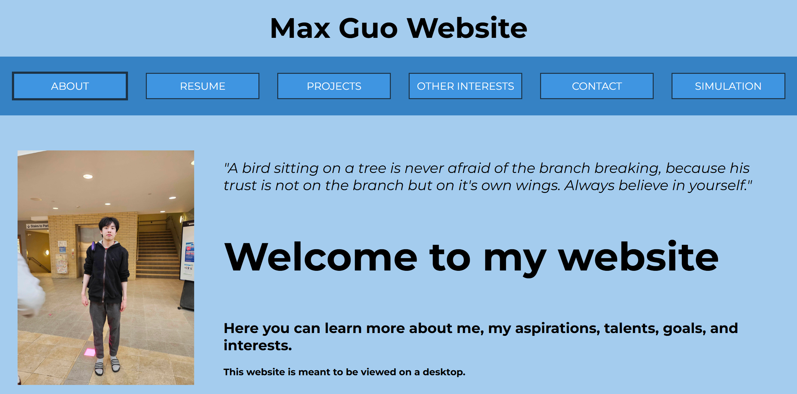
Intended Viewing Proportions
I made a crucial beginner mistake while developing my website. I only viewed it on my laptop throughout the majority of the creation process. As a result, I failed to test my website under varying display resolutions and sizes. Upon realizing this oversight, I began testing the site under various conditions, including on a desktop, and discovered several layout inconsistencies.

Website Desktop Proportions
The majority of the website’s dimensions were initially set using fixed pixel (px) values. This meant that padding area, font sizes, and margins remained constant regardless of the viewing window size. As a result, when viewed on larger or differently sized screens, the website would not scale proportionally. The fix required a complete conversion of all pixel measurements to viewport width (vw), which would scale elements based on the width of the browser window. This was made easier by the many classes I created in my CSS file. Converting to vw allowed for a consistent ratio between the viewport and the website layout.
In addition to vw, I also explored other responsive units like vh (viewport height), em, and rem.
TIMELINE
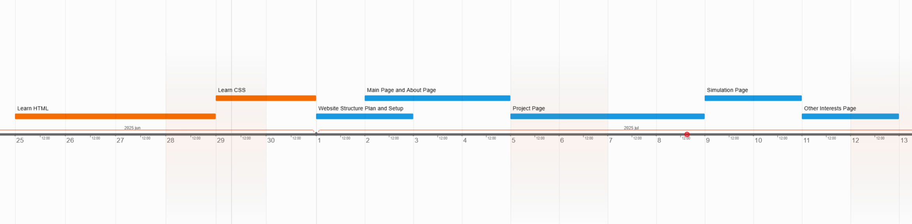
Planned Project Timeline
I mostly stayed aligned with the initial goals outlined during project planning. However, in some areas, certain tasks were not completed within the originally specified time, resulting in overlaps with other tasks. As an example, I came to realize that learning HTML and CSS alongside building the website would be a more practical and time-effective approach. Setting clear goals proved very helpful in pacing myself and preventing procrastination.
RESULT
My personal website will always be a work in progress. Outside of the placed timeline, the plan is to constantly improve and add onto the website. I'm overall satisfied with how the website turned out. Mobile compatibility is one of the key features I plan to implement in the future.
Self-Balancing Inverted Pendulum Robot
INTRO
The main goal of this project was to design and fabricate a robot capable of balancing itself and also maintaining balance while being driven by an operator over bluetooth. The main additional feature was decided to be an object launcher, as being able to launch and keep the robot stable would be an excellent display of the robot’s ability to maintain balance. The other features added to the robot were an autostop condition, a speaker that sounds at low battery, and an LCD that displays the angle, motor speed, and battery life.
HARDWARE
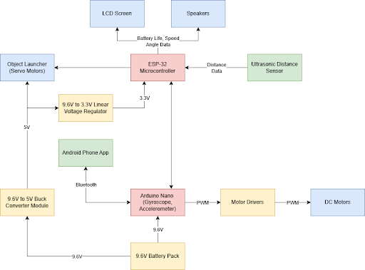
System Block Diagram
The robot uses two microcontrollers--an Arduino Nano 33 BLE Sense Rev2 for the main functionalities (driving, bluetooth control, angle sensing), and an ESP32 DEVKITM-1 for the additional functionalities (object launcher, LCD screen, battery life speakers, distance sensor). The robot balances by continuously measuring the current angle using the Arduino’s built-in accelerometer and gyroscope. This angle data is inputted into a PID control loop, which calculates and outputs the speed and direction for the motors to drive.
ASSEMBLY
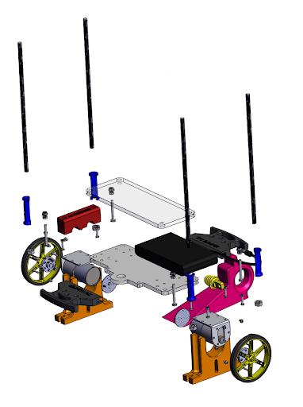
SolidWorks Model of Robot Base
The decision was made to use two breadboards to improve wiring organization. The main one housing motor drivers along with Arduino Nano, and the other containing the ESP32 and additional sensors. The decision to mount the breadboard centrally on the secondary base plate was due to maintaining the robot’s symmetrical balance. To optimize weight reduction, we designed the object launcher base and third structural plate as a single unified component. The complete object launcher print was mounted on top of the secondary base plate, separated by additional 3D-printed 45mm standoffs. Attached to the bottom of the object launcher base was the auxiliary breadboard, tasked with managing additional sensors. This placement was optimal for wired communication between the Arduino Nano and the ESP32 while preserving the robot’s center of mass.
OBJECT LAUNCHER
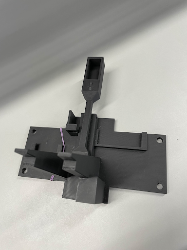
Finalized Object Launcher Print
The design of the object launcher progressed through three key prototypes, each iteration resolving major flaws revealed from previous versions. The initial skeletal prototype prioritized quick printability to gauge 3D printer accuracy. From testing it was revealed that servo limitations resulted in a weak launch strength placing importance on strategic placement of the motors. A second, full-featured version exposed structural issues, including weak supports and a thin arm cross-section which caused a degree of unwanted movement. The final design corrected all flaws whilst adding practical addons like mounts for the LCD and speaker, ultimately improving launch strength and durability. The resulting design was able to launch objects up to 3m away and reprime after launch.
RESULT
The self-balancing robot was able to be completed with all of the functionalities that were initially set. The major outcomes that have been accomplished were: self-balance, bluetooth communication, movement and turning, object launching capabilities, LCD data display, and autostop capabilities.
Remote Control Metal Detecting Robot
INTRO
The objective of this project is to design, build, program, and test a remote controlled metal detector robot. The robot must be completely battery powered and controlled by a joystick on the remote controller. The overarching goal is to detect metal (Canadian coins).
HARDWARE

Remote System Block Diagram
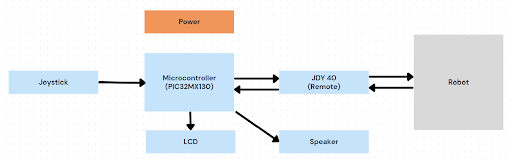
Robot System Block Diagram
The robot's control system consists of several key components using the PIC32MX130 as the central microcontroller. A PS2 joystick was used to determine direction and velocity, transmitting data to the microcontroller via the JDY-40 wireless module. The communication between the microcontroller to LCD display was through a 4-bit parallel setup. The JDY-40 handles two-way radio communication for transmitting control signals and metal detection feedback.
CODE
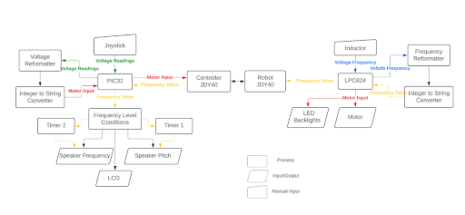
Software Block Diagram
Notable sections of the code include how the microcontroller processes joystick input. The voltage deviations from the neutral position are sent as formatted strings over the radio using an integer-to-string converter. This data is converted to integers for motor movement via PWM signals, where vertical input controls power and horizontal input controls power distribution between the two wheels. Additionally, metal detection is achieved using a handmade inductor consisting of copper wires wrapped around the circumference of a wheel. The frequency of the inductor shifts in response to metals, which can be processed and converted to an integer string. Using Timers, we can select different speaker output tones and rates based on metal proximity.
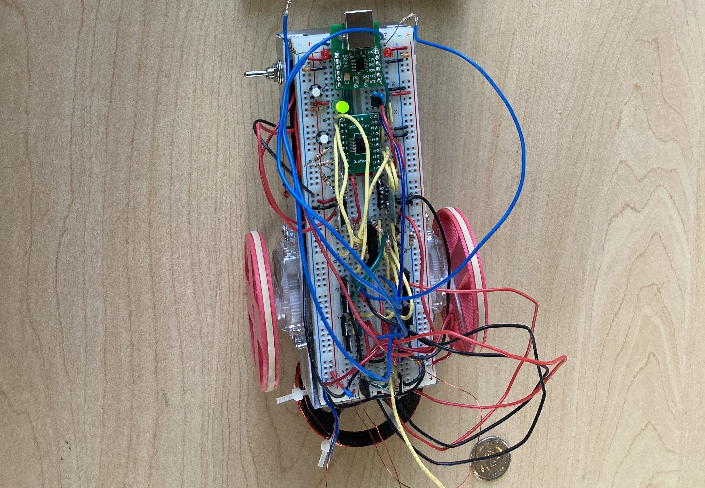
The Robot In All Its Glory
RESULT
Utilizing 2 different microcontrollers, the metal detector robot was able to be controlled by a radio signal remotely. Despite encountering challenges such as fine-tuning the detection sensitivity, debugging code, and ensuring seamless hardware integration, the final product was able to satisfy all requirements.
Submarine Bot
INTRO
The Submarine Bot project was a challenge of building a remotely controllable water vehicle capable of moving both horizontally and vertically underwater. One of the main restrictions was that only household items could be used; no external components or purchases were allowed. This meant disassembling existing items and repurposing their parts to construct the submersible.
SEGMENTS
The SubBot was seperated into three main segments: the ballast, main hull, and motor.
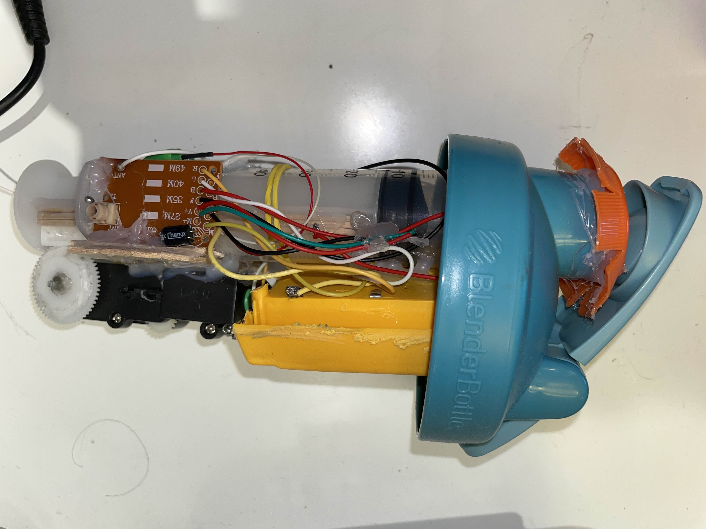
SubBot Balast
The first segment of the SubBot was the ballast system, which consisted of a bottle lid. A water bottle was chosen for its convenient screw-on lid, making battery replacement easy and accessible fir future replacements. A food syringe served as the ballast tank, connected to a gear mechanism that could rotate in both directions depending on whether the syringe needed to draw in or expel water. This shift in weight would be the deciding factor on whether the SubBot would ascend or descend underwater. The motor and gears driving this system were salvaged from an existing RC toy.
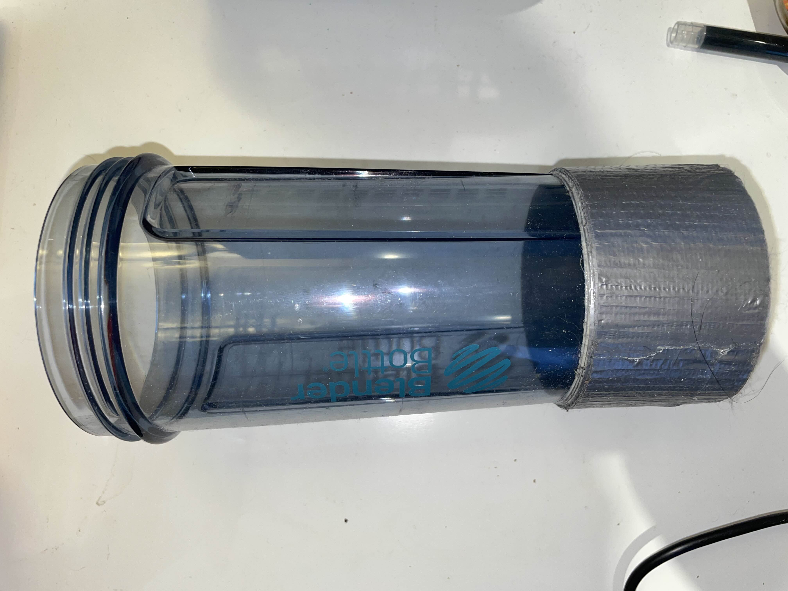
SubBot Hull
The second segment of the SubBot was the main hull, which consisted of the bottle itself. This section housed the protruding ballast mechanism and provided a watertight seal between the bottle lid and the bottle, allowing the SubBot to operate underwater without fear of water leakage. The interior of the bottle was padded with additional weights to achieve a balance between buoyancy and submersion, as well as for even weight distribution across the sub, preventing the front from tipping when the ballast was fully extended. The rear of the hull was wrapped in layers of tape to increase the circumference to match the width of the third segment.
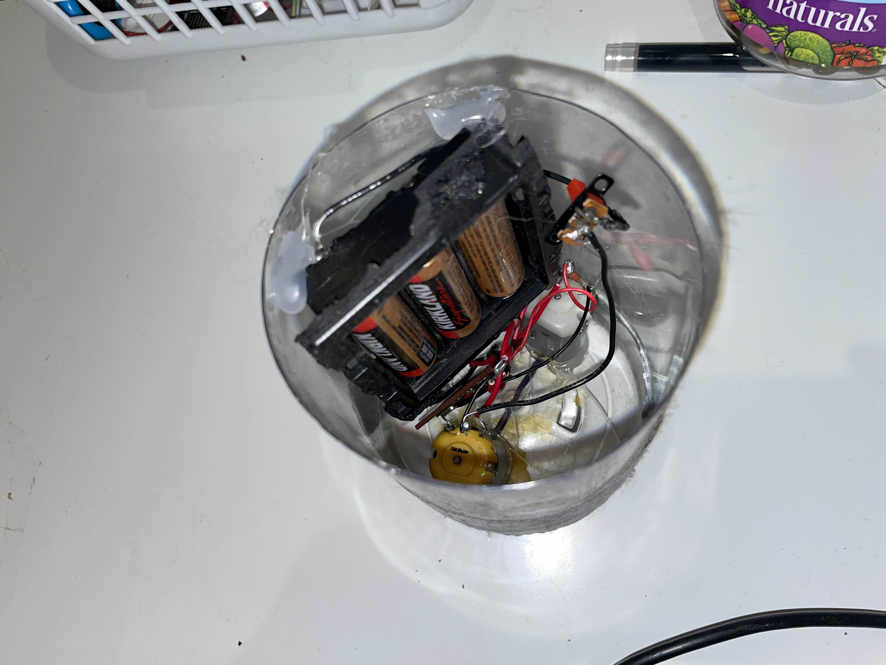
SubBot Motor
The third segment of the SubBot was the motor compartment, with motors salvaged from another RC toy. The spinning rods of the motors were connected to custom metal fins, cut from aluminum cans. Depending on which fins were spinning, the SubBot could move forward, reverse, or turn. The third segment was attached to the hull using rubber bands, providing a consistent and flexible seal to maintain airtightness.
RESULT
Throughout the project, many unexpected issues arose. For example, the two motors used to propel the SubBot had drastically different speeds. To address this, I repurposed resistors to reduce the power of one motor, resulting in more consistent performance between the two. Ensuring watertightness was paramount for the project to succeed. This led to extensive testing of the outer segments' attachment configurations to confirm which was best before introducing any electronics. The SubBot was also significantly limited by the hardware itself. The transmitter and receiver operated at 2.4 GHz, whereas more effective underwater communication requires much lower frequencies. As a result, the SubBot could only receive signals at shallow depths. Overall, although its capabilities were severely limited, the SubBot satisfied the initial goals of traversing underwater both vertically and horizontally.